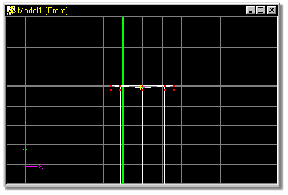
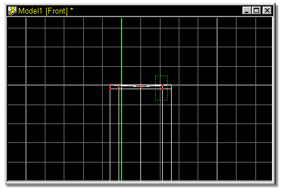
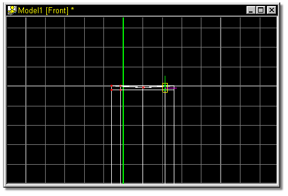
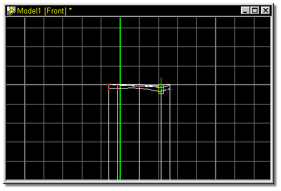

Using the down arrow key on the keyboard, move the selected group down until
it is just below the surface of the top cross section, as shown in figure 25.

Figure 25
Click the Group button, and select the points shown in figure 26 by dragging
a bounding box around them with the mouse.

Figure 26
The screen should look similar to figure 27.

Figure 27
Press the down arrow on the keyboard 5 times, until the model looks similar to
the one shown in figure 28.
